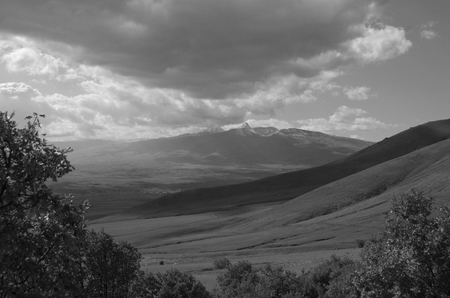
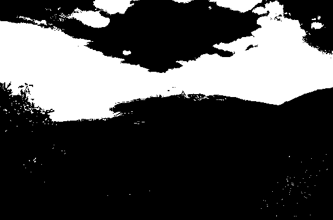
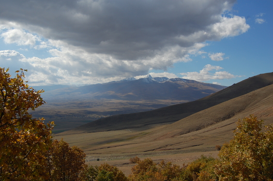
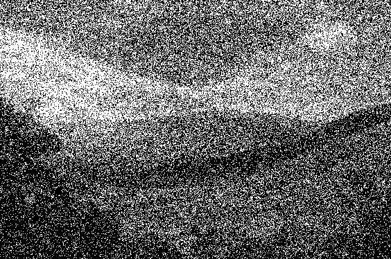
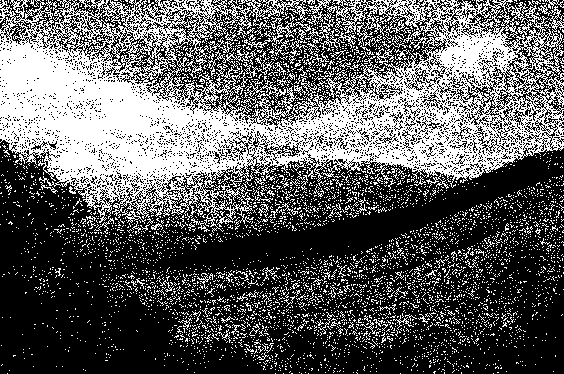

Dithering
Using noise to make images clearer
Demo
Quantisation
How can an image with rich details be rendered when hardware/software limitations restrict the number of colours that can be displayed?
Outlined below are several methods of doing this, with demonstrations.
Demonstration Software:
All of the methods listed can be tested using the demonstration software available at the top of the page.
Please click the '?' button on the demonstration window for instructions.
Quantisation is the process of taking values from a large range and mapping them to a smaller range.
For our purposes, this means mapping pixel data in 24-bit colour (256-bits for each channel in RGB colour) into a binary black or white pixel.
It is important to note that greyscale is not the same as black-and-white.
While greyscale images support pixels of varying shades of grey, black-and-white rendering is binary, meaning pixels are restricted to being either fully black or fully white.
All futher examples will look at rendering an image using solely black and white pixels.
Thus, the image is converted to greyscale before any algorithm to convert to black-and-white is applied.

Greyscale

Black and white (threshold = 128)
Reducing image data from 24 bits per pixel to 1 bit per pixel is a data reduction of more than 95%! I will list some methods of preserving as much detail as possible to create the highest quality black-and-white image.
For reference, here is the original colourised image that the examples are based on:

Mount_Aragats_near_Aparan_25.jpg by Felix Khachatrian is licensed under CC BY 2.0
{kind=link}
1. Thresholds
Possibly the most straightforward approach is to take the luminance value, an integer between 0 and 255 inclusive, and define a threshold at which the pixel is set to black (0) or white (255).
For instance, if the threshold is set to 128, all pixels with a luminance value less than 128 are mapped to black, while those greater than or equal to 128 are mapped to white.
Essentially, this method turn pixels black or white depending on if they are "more black" or "more white".
Logically, this should result in an image most similar to the original given the constraints.
Unfortunately this method fails to preserve details and can cause banding, where smooth gradients become harsh boundaries.
-- Dithering --
The follwing methods are different ways of dithering. Dithering is a technique that allows for a greater number shades to be simulated than the display system can actually output.
2. Random Noise Dithering
This method of dithering involves taking the greyscale image and adding random noise.
It works by using a thresholds - except each pixel's threshold is different i.e. random.
This randomness creates better "greys" i.e. shades can be rendered more accurately.
It works because a grey pixel has a possibility of turning black or white during quantisation.
If a pixel has a higher chrominance value (i.e. the pixel is more white), it has a greater chance of being mapped to white; the same logic applies to darker greys.
A shortcoming of this dithering method is that the resulting image is often very noisy, reducing clarity of sharp details.
The demo also offers upper and lower bounds to reduce unwanted noise.
This means the randomly set threshold can be clamped between certain values.

Random Dithering

Random Dithering with lower & upper bounds of 50 and 200, respectively